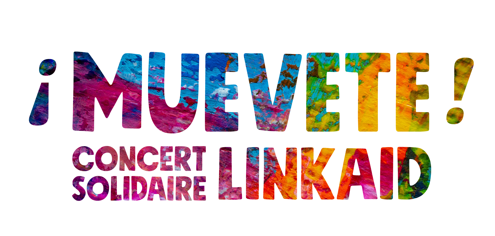

Semaine d’amérique latine et des caraïbes
Linkaid
est une Association de Solidarité lancée en avril 2020 pour répondre à l’urgence alimentaire en France lors de la situation sanitaire et sociale dégradée par la pandémie de Covid-19 et la précarisation liée au confinement. C’est en allant quotidiennement à la rencontre de nos bénéficiaires lors des distributions que nous avons très rapidement vu la nécessité d’étendre notre action et ouvert 3 nouveaux programmes d’Actions Solidaire. Aujourd’hui, Linkaid rassemble environ 250 volontaires à travers l’ïle-de-France et participe activement à l’accompagnement de foyers précaires dans leur combat pour la dignité et l’indépendance.